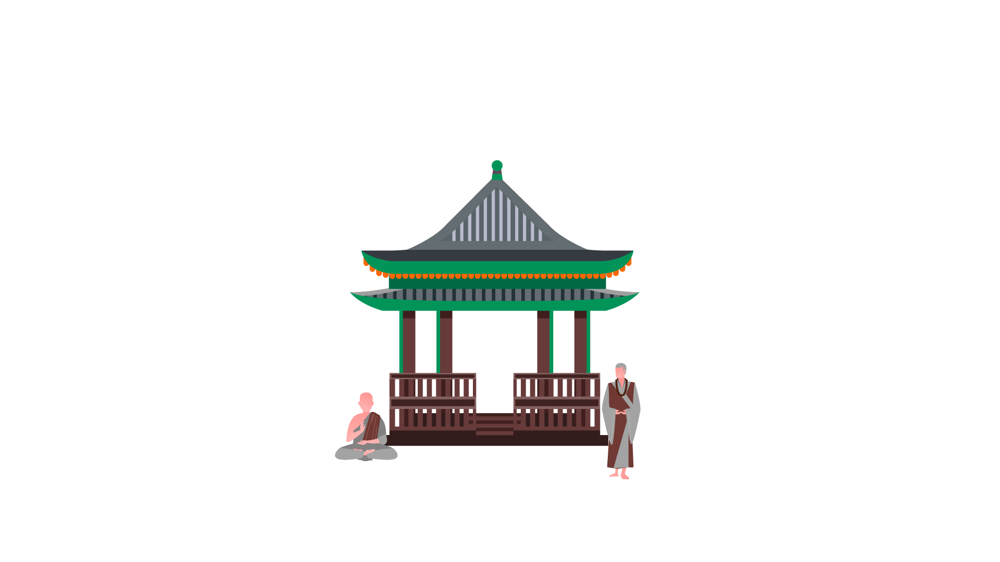
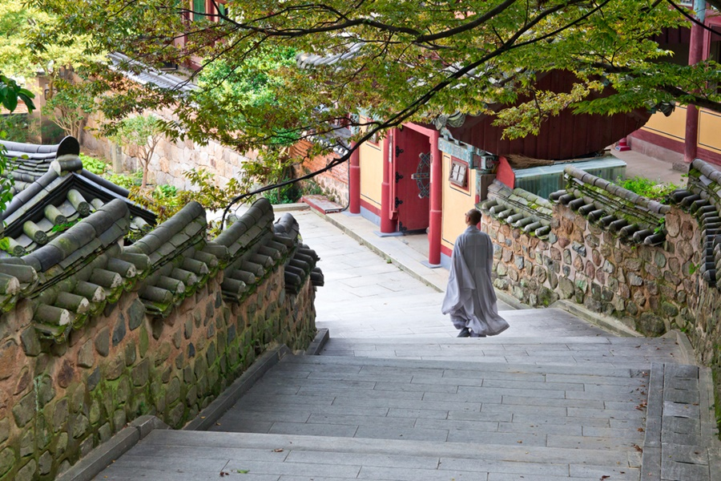
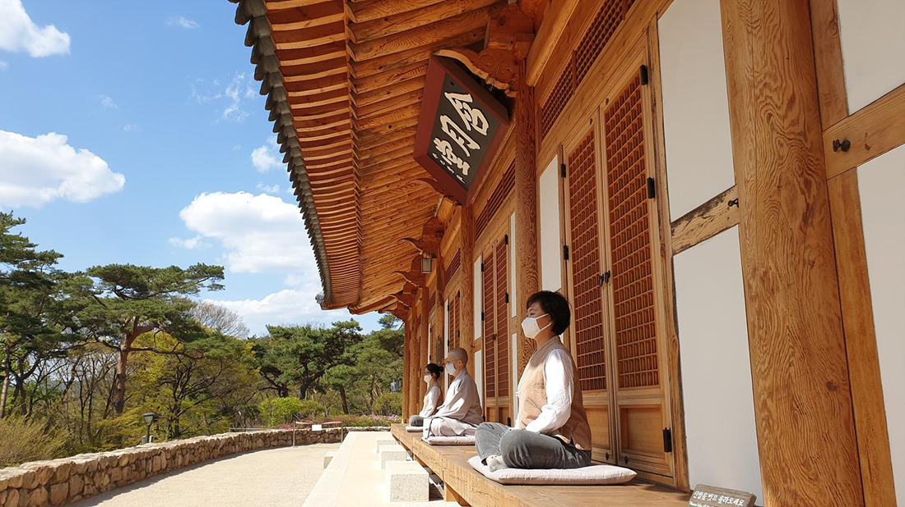
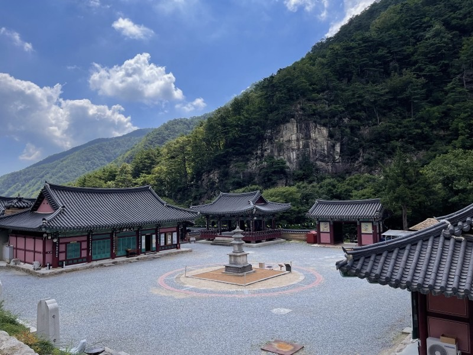
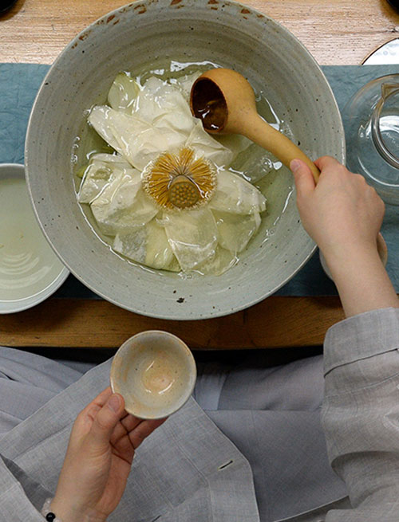
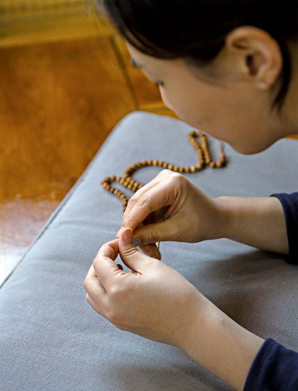
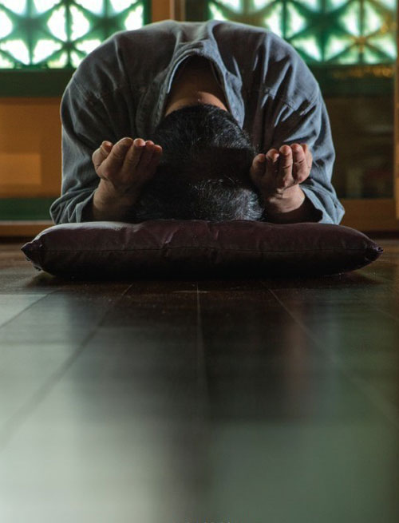

사찰 소개
템플스테이
프로그램 안내
오시는 길
참된 나를 찾아 떠나는 여행,
템플스테이
삼화사

삼화사에서 운영하는
템플스테이 프로그램
을 소개합니다.

“쓰담쓰담” 템플스테이
(소상공인, 여행업계, 문화예술계 종사자 대상)

"내 삶에 작은 쉼표 하나" 템플스테이
(일반인 대상 휴식형)

“토닥토닥” 템플스테이
(코로나19 대응의료진, 경찰관, 공무원 및 방역관계자 대상)
프로그램 안내
떠나고 싶을 때, 쉬고 싶을 때
우리가 꿈꾸는 바로 그 여행.
떠나고 싶습니다. 쉬고 싶습니다. 혼자여도 좋고, 함께라면 더욱 좋습니다. 대한민국 구석구석 아름다운 산사에서 만나는 특별한 휴식.
템플스테이는 삶의 쉼표가 필요할 때 마음이 쉬어가는 곳입니다.
차담
따뜻한 위로가 담긴 차 한 잔, 차담 & 다도

발우공양
수행자의 지혜가 담긴 식사법, 발우공양
염주 만들기
산란한 마음을 동그랗게, 염주 만들기

108배
몸과 마음을 다스리는 절 수행, 108배

오시는 길